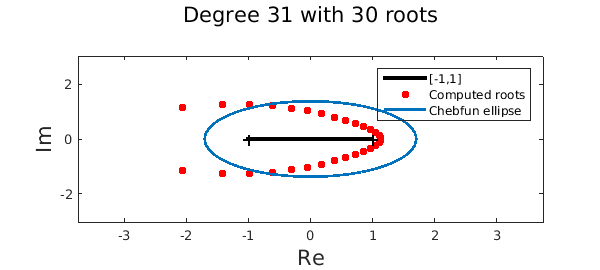
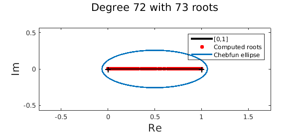

LW = 'linewidth'; lw = 2; MS = 'markersize'; ms = 20; FS = 'fontsize'; fs = 16;
The fundamental theorem of algebra
The fundamental theorem of algebra states that every polynomial of degree exactly $n$ with real or complex coefficients has exactly $n$ roots, counted with multiplicity. A chebfun of length $n+1$ is a polynomial of degree $n$ (assuming its leading coefficient is nonzero), so mathematically has exactly $n$ roots. For example,
n = 100;
f = chebfun(rand(n+1,1)); % This chebfun is of degree 100
r = roots(f,'all'); % Compute all its roots
fprintf('This chebfun of degree %u has %u roots\n',length(f)-1,length(r))
This chebfun of degree 100 has 100 roots
Great! At first it seems that the roots command in Chebfun is consistent with the fundamental theorem of algebra. We now give examples to the contrary.
Fewer roots than expected
Sometimes the Chebfun roots(...,'all') command returns fewer than $n$ roots for a chebfun of degree $n$. For example,
f = chebfun(@(x) exp(-10*x)); % A chebfun of exp(-10x)
r = roots(f,'all'); % Compute all its roots
plot([-1 1]+eps*1i,'k-','linewidth',3), hold on % Plot
plot(r,'.r',MS,ms), chebellipseplot(f,LW,lw)
xlabel('Re',FS,fs), ylabel('Im',FS,fs)
legend('[-1,1]','Computed roots','Chebfun ellipse')
title(sprintf('Degree %u with %u roots\n',length(f)-1,length(r)),FS,fs), hold off

What's going on? The roots command in Chebfun is based on the colleague matrix [3]. The construction of this matrix requires a nonzero leading coefficient of the underlying Chebyshev expansion. In practice, we often chop small leading coefficients to prevent numerical issues. The consequence is that the chebfun is reduced in degree and therefore, fewer roots are computed. The importance of this step, which is closely related to removing large roots near infinity, has been debated several times in the Chebfun team. The jury is still out. Note that the roots that are removed are not expected to be of interest in Chebfun because they are nearly infinite.
More roots than expected
The Chebfun roots command can also return more roots than the degree of the chebfun. For example, consider the Wilkinson polynomial of degree 71:
n = 71; xx = (0:n)/n;
f = chebfun(@(x) prod(x - xx),[0 1],'vectorize');
r = roots(f);
plot([0 1]+eps*1i,'k-','linewidth',3), hold on
plot(r+eps*1i,'.r',MS,ms), chebellipseplot(f,LW,lw)
xlabel('Re',FS,fs), ylabel('Im',FS,fs)
legend('[0,1]','Computed roots','Chebfun ellipse')
title(sprintf('Degree %u with %u roots\n',length(f)-1,length(r)),FS,fs), hold off

More startling, we get fewer roots if we supply the 'all' flag:
rreal = roots(f); rall = roots(f,'all');
fprintf('No. of real roots = %u\n',length(rreal));
fprintf('No. of complex (and real) roots = %u\n',length(rall));
No. of real roots = 98 No. of complex (and real) roots = 72
What's going on? When we only ask for real roots the underlying algorithm uses 1D subdivision if the chebfun is of degree $50$ or more [1,2]. However, this subdivision process can, on rare examples (like above), lead to more solutions. The Wilkinson polynomial has an extreme scaling, and in the middle of the interval the polynomial is relatively below machine precision. On subdivision, subdomains near the middle of the interval contain little information about the original polynomial and roots generated by rounding errors are computed. However, these solutions are correct in the sense that the residue is small:
norm(f(r))
ans =
1.644550366863614e-47
Alternatively, when we supply the 'all' flag an eigenvalue problem is constructed (without subdivision) and extra solutions are never introduced in practice.
Conclusion
At the edge of machine precision, apparent anomalies between the degree and the number of roots of a chebfun are never too far away. These effects highlight the challenges of computing in a system that must constantly make decisions about what quantities are effectively zero. It's just worth keeping in mind that a chebfun of degree $n$ does not always have $n$ roots.
Acknowledgements
I'm grateful to Yuji Nakatsukasa and Vanni Noferini for showing me that the roots command returned more solutions than expected for the Wilkinson polynomial of degree $71$.
References
-
Z. Battles and L. N. Trefethen, An extension of MATLAB to continuous functions and operators, SIAM Journal on Scientific Computing, 25 (2004), pp. 1743-1770.
-
J. P. Boyd, Computing zeros on a real interval through Chebyshev expansion and polynomial rootfinding, SIAM Journal on Numerical Analysis, 40 (2002), pp. 1666-1682.
-
L. N. Trefethen, Approximation Theory and Approximation Practice, SIAM, 2013.